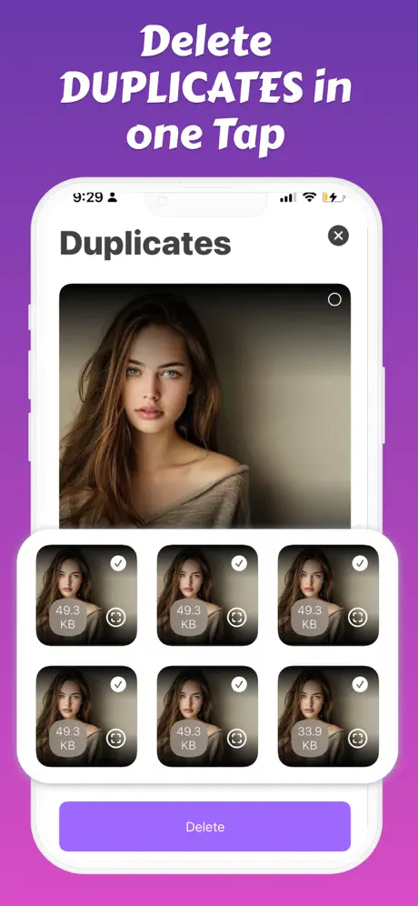
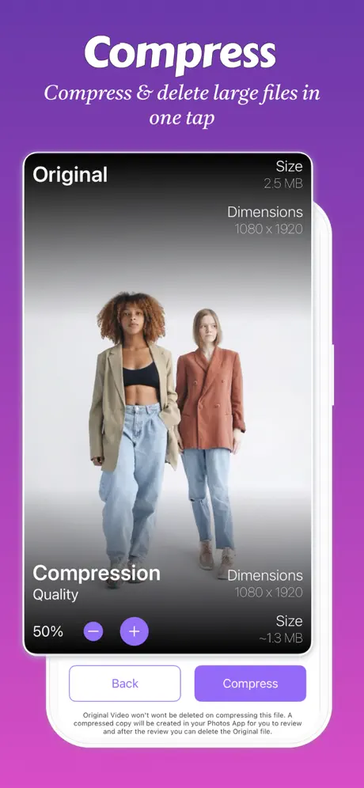

Find duplicate & similar photos, auto‑clean screenshots and junk, and compress large media — all locally on your device.
Purpose‑built tools designed for real‑world photo libraries.

Perceptual hashing catches near‑identical shots. Review groups, keep the best, and clean the rest safely.
Auto‑detect screenshots, web images, comics, blurred pics, NSFW, and more — you're always in control.

Shrink large photos & videos with minimal quality loss. Save gigabytes in minutes.
Expert guides to help you manage your iPhone storage.
Running out of space? Learn the most effective ways to reclaim iPhone storage fast.
Read article →Duplicate photos silently consume gigabytes of storage. Here's how to find and remove them.
Read article →Large video files eating your storage? Learn how to compress them while keeping quality.
Read article →Everything you need to know about Fast Cleaner.
Your privacy is 100% protected. Fast Cleaner processes everything locally on your iPhone using on-device AI. No photos, videos, or personal data ever leave your device. We don't have servers that store your content — because we never see it in the first place.
Don't worry — you have 30 days to recover it. When Fast Cleaner removes photos, they go to your iPhone's "Recently Deleted" album, not permanent deletion. You can restore any photo within 30 days. We designed it this way so you can clean confidently without fear of losing memories.
Most users recover 5-15GB on their first cleanup. The exact amount depends on your photo library, but duplicate photos, similar shots, screenshots, and uncompressed videos typically waste 20-40% of your storage. Heavy users with large libraries often free up 20GB or more.
We find what Apple misses. Apple's Duplicates album only catches exact pixel-perfect copies. Fast Cleaner uses AI to detect similar photos too — like 10 shots of the same sunset, burst photos you forgot to clean, or slightly different angles of the same subject. We also identify screenshots, blurry photos, and junk images automatically.
Yes, core features are free forever. Scan your library, find duplicates, and clean up to 50 items free. Premium unlocks unlimited cleanup, video compression, contact merging, and priority support. Most users try free first, then upgrade when they see how much space they can save.
You won't notice the difference. Our smart compression reduces file sizes by 50-80% while preserving visual quality. The difference is only visible if you zoom in on a 4K monitor. For watching on phones, tablets, or sharing with family — compressed videos look identical to originals.
Just a few minutes for most libraries. Scanning typically takes 1-3 minutes depending on your library size. The actual cleanup is instant — select what to remove and tap Clean. Video compression takes longer (about 10-30 seconds per minute of video) but runs in the background.
Yes, fully compatible. Fast Cleaner works with iCloud Photos enabled. When you delete duplicates, they're removed from iCloud too (syncing across all your devices). If you use "Optimize iPhone Storage," we can still detect duplicates in your optimized library.
Download Fast Cleaner and free up space today.